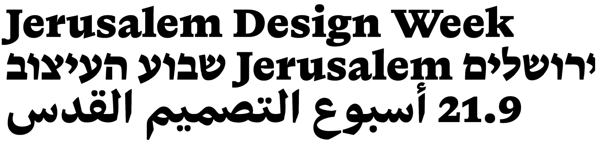
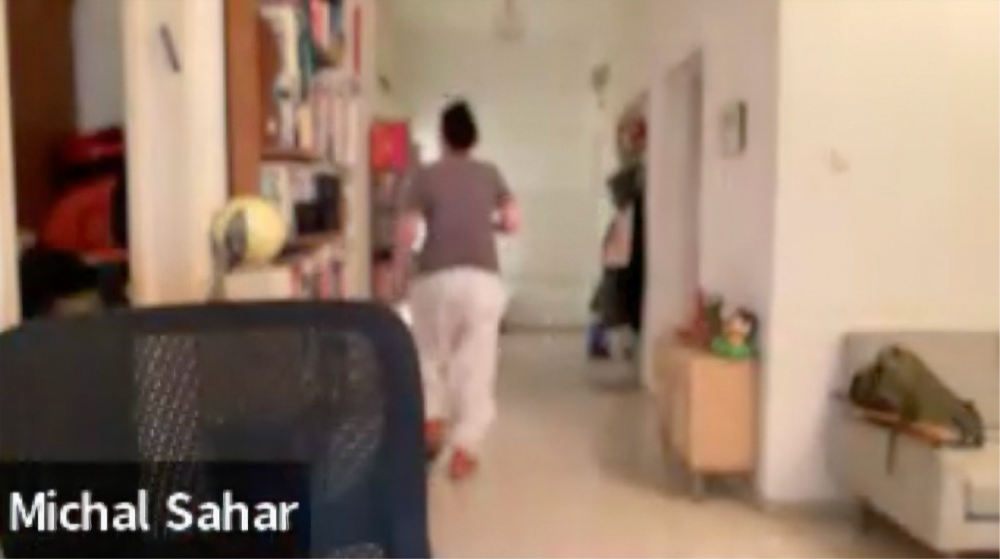
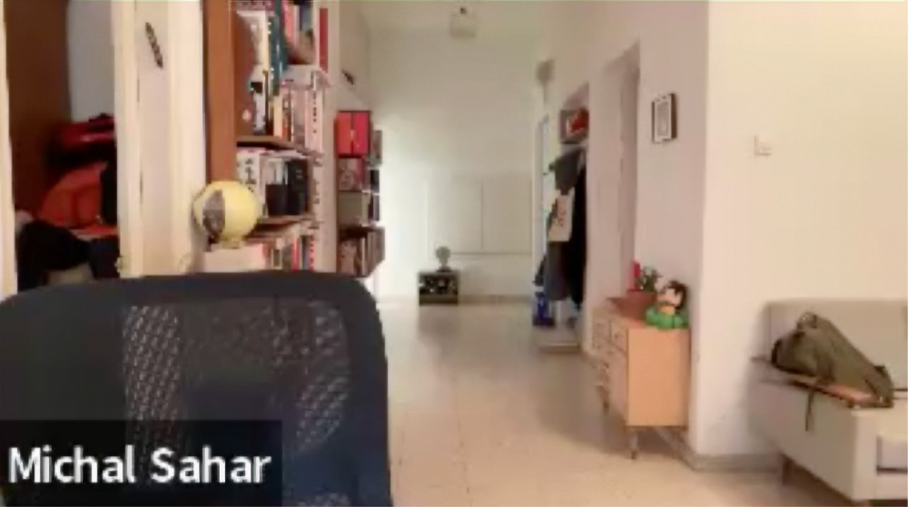

כִּּעוֹרֵת
[Uglendous]
I can’t stand Michal Sahar.
And I admire her.
The sheer freedom she allows herself, her complete disregard for conventions – it infuriates me to a level I can hardly explain.
And it makes me admire her even more.
I don’t think it’s an exaggeration to say that Michal is a groundbreaking designer who has changed the face of type design in Israel.
I first met her as a student at Bezalel, during my final project presentation, where I created the font Carmela, designed for screens. Not only was she on the jury, but she was also the only one who fully grasped how genius my Carmela truly was – as is often the case with works that are ahead of their time…
And so, she invited me to join her and work on one of the fonts she was developing at the time.
I was responsible for a process called hinting – which today is mostly automated by type design software, but back then, it required a hungry, obsessive, and overenthusiastic student to do it for a pathetically low wage – just for the privilege of sitting next to someone who, in my eyes, was a true master.
For all these reasons, I wanted to interview her.
Or actually – just sit and talk to her, try to understand what the hell is going on in that brilliant, deranged mind of hers.
I approached this interview with the kind of reverence usually reserved for religious pilgrimages. I felt like the kid from The Karate Kid going to meet Mr. Miyagi.
The night before, I couldn’t sleep until six in the morning.
By seven, I was already after my coffee, ready to go.
The entire month leading up to the interview, I dedicated myself to a deep dive into Michal’s work, even though it was completely unnecessary – because as a hardcore fan, I was already one step away from lurking outside her apartment building.
I meticulously planned the interview, prepared questions, determined not to waste a single second of my Goddess’ time.
Ten minutes before the scheduled time, I was already seated in front of my screen, wearing my best clothes, waiting in a mix of fear and anticipation.
Then, after what felt like an eternity, she joined the Zoom call.
I tried to play it cool, but my heart was racing at 200, and my mouth went dry.
Michal showed up like she had just finished a triathlon, still high on adrenaline, fidgeting in her chair, and chugging red wine from a glass that – by the end of our conversation – would be emptied and refilled over and over and over again.
I had a killer opening line prepared and had practiced it the day before.
I took a deep breath, channeled all the effortless cool I don’t possess, and in my suavest, most nonchalant voice, I said:
“So, what’s up?”
A wave of pride washed over me. Look at you, I told myself. Having a conversation with Michal Sahar.
She stared at me.
Then repeated my question with absolute disdain.
“What’s up?”
She made it sound like I had just uttered the single dumbest sentence in the history of human speech.
I knew I should’ve opened with a simple “Hey.”
“What’s up, he asks…?” she scoffed, her voice rising.
Then, taking another quick, determined sip of wine – she took off:
“What’s up…? I’m just sitting here, pounding wine. That’s what’s up. I swear, I’m gonna end this period of my life as a full-blown alcoholic. It’s bad. It’s really bad. Like, wine isn’t even heavy, you know? But I swear, I cannot get through a day without alcohol. I literally cannot! Some people are into weed, but I don’t smoke weed, so I need some other painkiller, okay? I swear, it’s terrible. Okay?”
“Okay, okay, totally!” I jumped at the opportunity to engage – to prove I wasn’t a complete idiot oblivious to what was happening in Israel post-October 7th.
Desperately trying to steer the conversation, I grasped at the first relevant thing that came to mind and blurted out:
“So… you read Arabic, huh? Like, read read it?”
Nice… Read read as opposed to just read?
“OF COURSE!” she practically yelled.
“You can’t design Arabic without reading Arabic. I don’t even understand how that’s a question.
I don’t remember a lot of things anymore, but it doesn’t matter. It’s like if I read Hebrew and forget what ‘bread’ means. I’ll still read ‘bread.’ It’s the same with Arabic. I’ve known the script forever. I’ve been reading it since I was really young.
My grandfather… It’s from him. I mean, we learned it in school too. But for me, it was never foreign. It always felt natural. My grandfather used to write in Arabic. He spoke it, too. My dad was Syrian – may he rest in peace. I’m half Halabi. I’m a Mizrahi woman who became Ashkenazi. Totally. But I’m a full-on Mizrahi, babe. I just look Ashkenazi. I’m half Halabi. Half Georgian, half Halabi.”
“Oh, yeah, same here!” I awkwardly tried to chime in.
“I’m a mix of Iraqi, Lebanese, Turkish, and Greek.”
As if that would somehow make her see me as her equal. Dream on, kiddo.
“Greece! Wow. Yes. Oh, everyone’s hot on Greece now. Everyone’s buying houses in Athens. Everyone’s obsessed with it. It’s crazy. There’s nothing like Greece.
It’s actually crazy though, you know? I made Editor. I made it so lovely – like, Editor Sans – and suddenly, I thought, wait a second… I never even considered making an Arabic version.
But after working on Fedra and Greta with Kristyan (Sarkis) and Peter (Bilak), I was like, huh… I understand Arabic. Maybe I should give it a shot? And then I discovered – I’m embarrassed to say – but it just felt completely natural to me.
It actually felt more natural than Latin. You should know, Latin is much harder for me. I mean, obviously, I’m amazing at it – but the learning curve was so much steeper…”
“Arabic, though – energetically, my body just gets it. And Latin, I really have to study it, even though I’m already great at it. Yet Arabic feels instinctual, like something in my body, in my nature. I don’t even know how to explain it to you.
It’s physical – like my body understands it. It’s not just taking a brief and following instructions – I feel like I speak this script, like I just get it on a deep, intuitive level, and that’s how I can create something really beautiful and really good.
…So one day, I just thought, why not try Arabic?
And then I made Editor Sans, which, by the way, is stunning – like, truly one of the best… I nailed it. I nailed Arabic Editor.”
“And suddenly I realized just how much Hebrew and Arabic are connected – especially the Tsadi, Kaf, and Aleph.
I suddenly saw how deeply the scripts are related. And actually, through fast handwriting, I discovered that so much of the italics can be taken from Arabic. I mean, WOW. It was totally mind-blowing! This was a breakthrough!
There’s just – there’s so, so, so much connection between Hebrew and Arabic.
And like, when you don’t have a reason to wake up in the morning, you just start doing things. With the war going on, projects get postponed, things shift around – and so, basically, I made Arabic in two months.”

“But wait,” I interjected. “The font you made in Arabic – do you see Arab designers buying a font made by an Israeli designer?”
“Well, the next thing I want to do is open a type foundry anonymously, so no one will know I’m Israeli, and I think I could sell Arabic fonts without any problem. Do you know what it means to design a trilingual system like this? It’s insane!
I just made a new Arabic typeface. I haven’t even told Peter yet…”


“SIREN!!! OH MY GOD, THERE’S A SIREN!!! THERE’S A SIREN!
SHIT. OMG! YOU HEAR THAT?! IT’S COMING FROM THE STAIRWELL – HOLY FUCK, CAN YOU HEAR THIS?!”
She jumped up and ran away, taking the wine with her.
Three minutes later, she popped back onto the screen.
“I’m back. That’s it. There were interceptions, there were explosions, but it wasn’t near us.”
“Wait, that was too fast. Aren’t you supposed to stay in the shelter for…?”
“I don’t wait,” she roared.
“I HEARD ALL THE BOOMS, AND I CAME BACK. So, where were we?”
Like she hadn’t just been in a life-threatening situation three minutes ago.
“In my opinion, Hebrew is harder.
Arabic is a much more beautiful language than Hebrew.
You need to start with the assumption that Hebrew is ugly, and then figure out – how do you pull beauty out of this thing?”
“Arabic, by the way, is a stunning script. Wait – did you have a Bar Mitzvah?
So, the letters in a Torah, you know – they’re Uglendous!”
Leave it to Michal to come up with the perfect word to describe the holiest thing in Judaism…
Meanwhile, she had more energy than ever, like someone who had just been given a second lease on life.
“Listen, I really have to go now, but seriously, you can’t even describe how uglendous it is.
And then you see Arabic – ‘Allahu Akbar’ – and you’re just like WOW.
So you bring that into it, and it’s just… WOW.
I’m telling you – your project? It’s going to be a success.
Talk to me anytime. Message me. Cool? I love what you’re doing.
Honestly, I think you’ve made huge progress. Like, your self-learning? Amazing.
Just amazing.
And your kid is cooking up.
It’s like that song, ‘Growing Up’ – except now it’s ‘Cooking Up.’
Incredible. Alright. Text me whenever, okay? Great. Amazing. Really amazing. And say hi to Matthew! Maybe he’ll invite me to Switzerland? Yeah, I don’t think he’ll invite me to Switzerland. My career’s down the toilet. Alright. Cool. Bye. Kisses. Bye. Bye. Bye.”